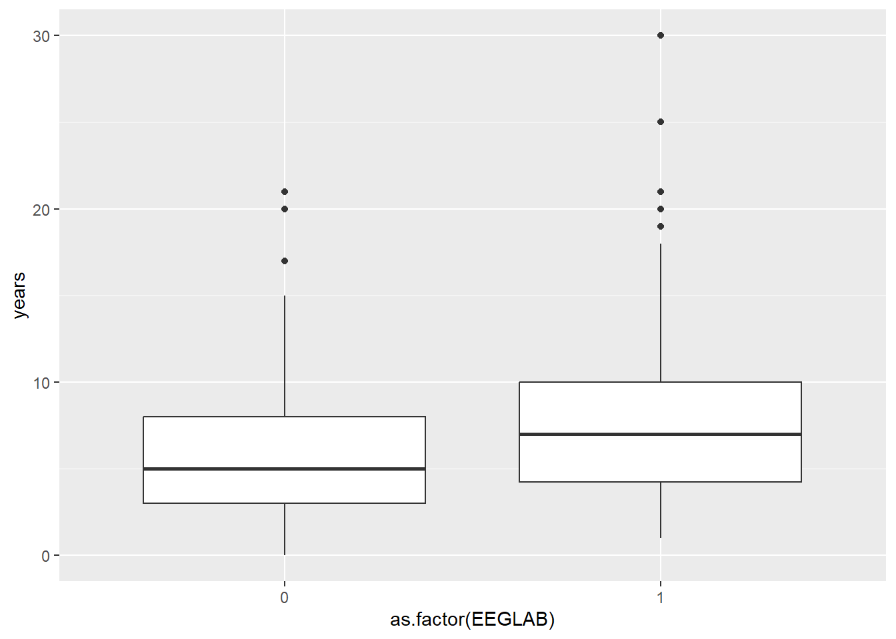
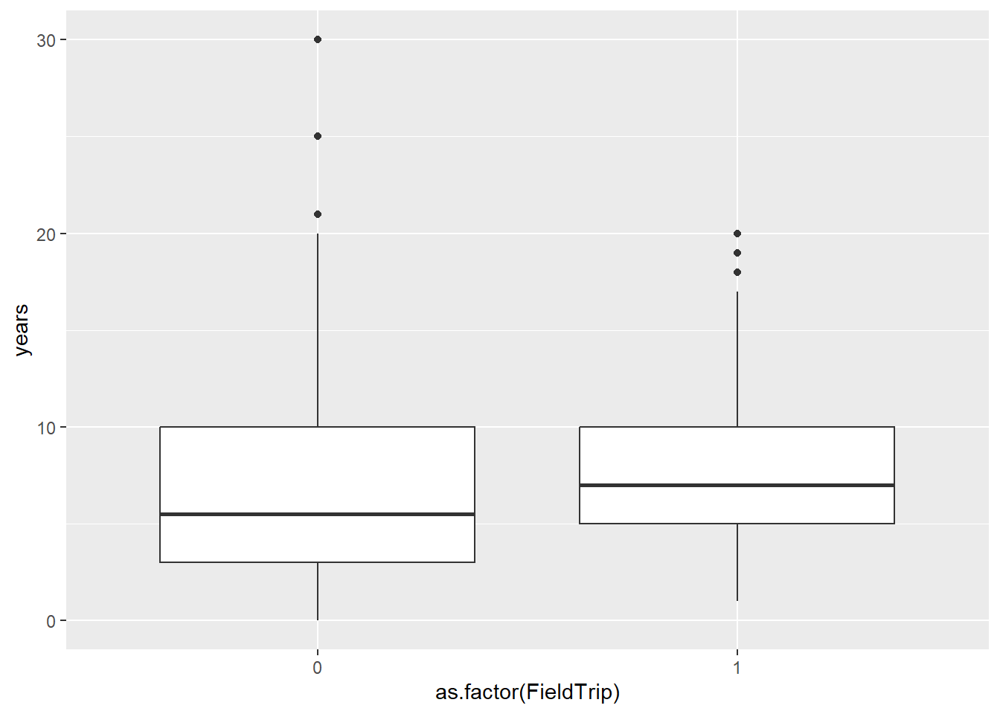
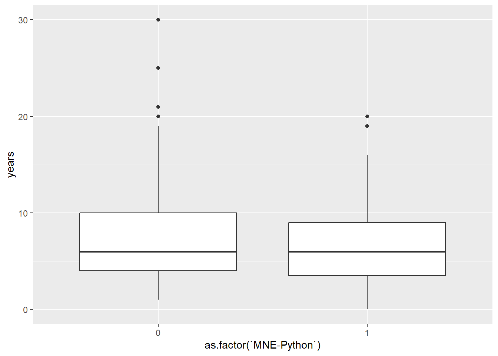
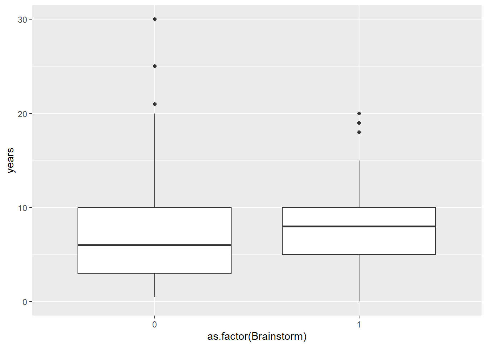
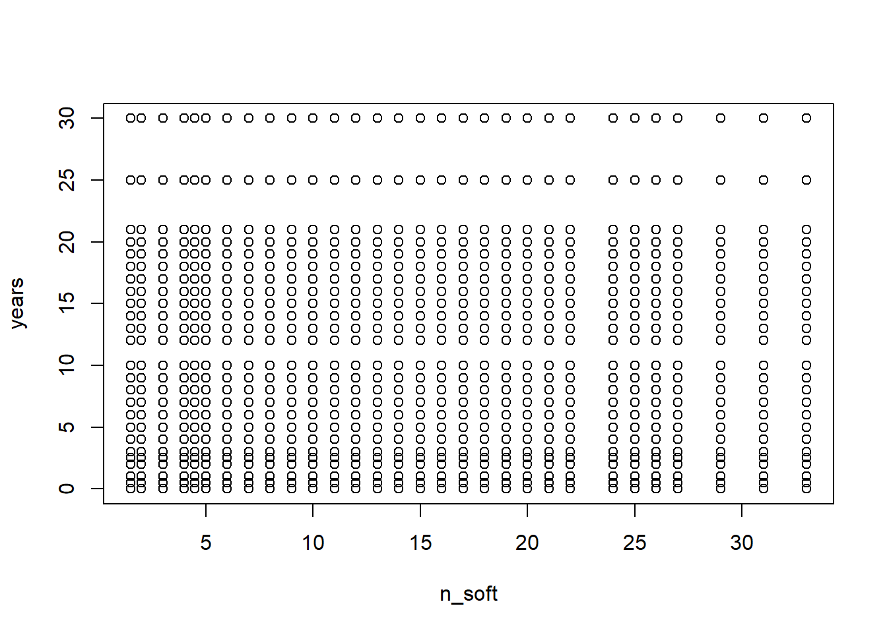
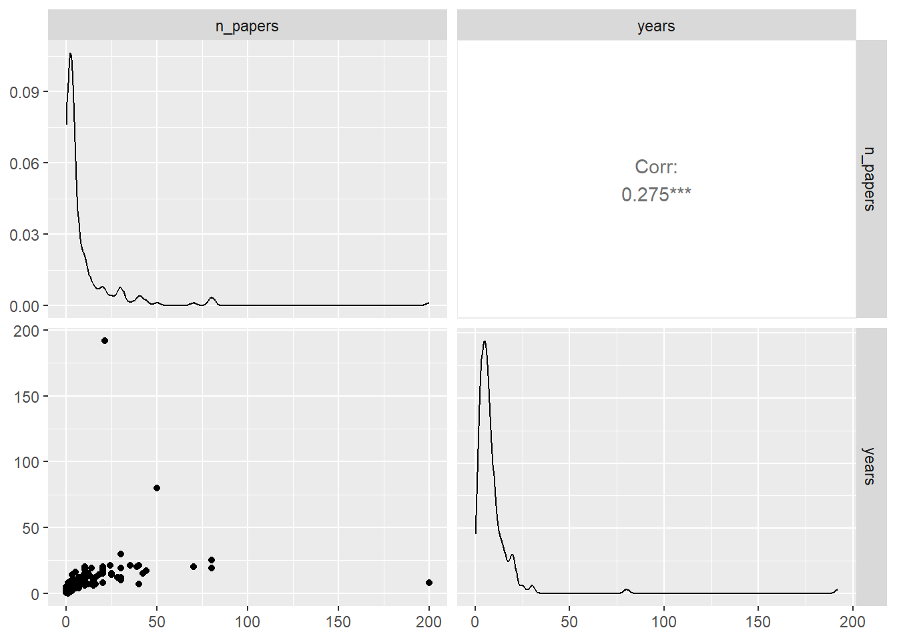
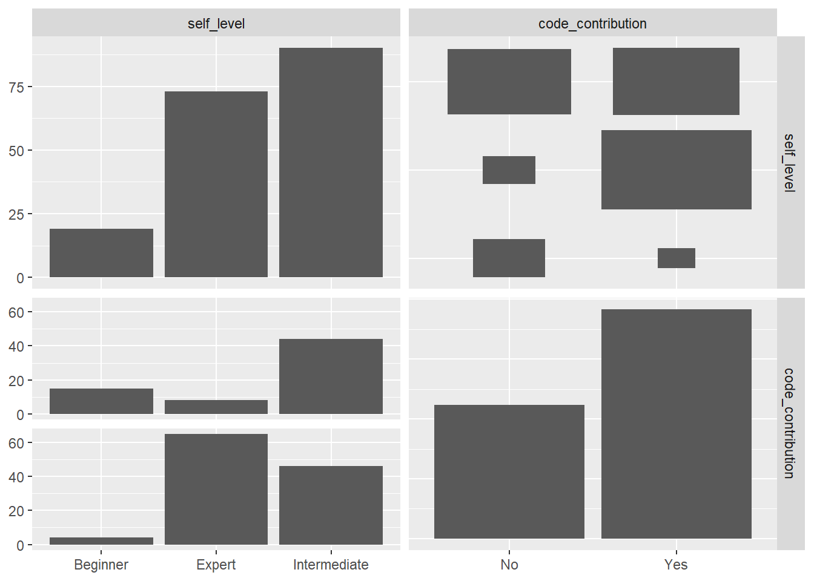
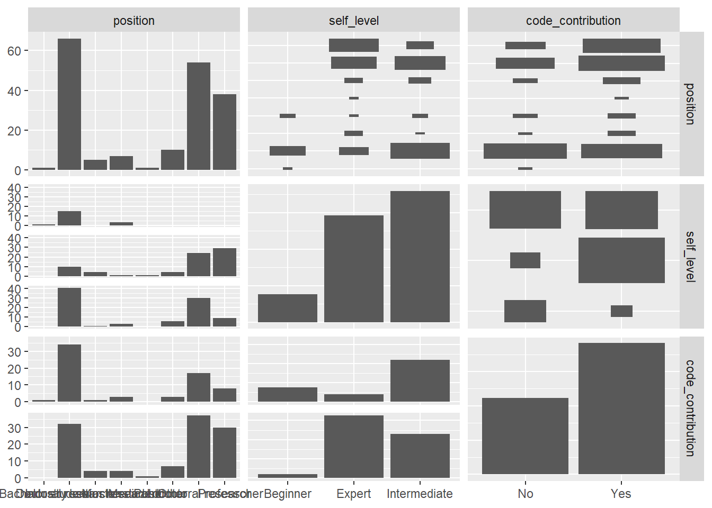
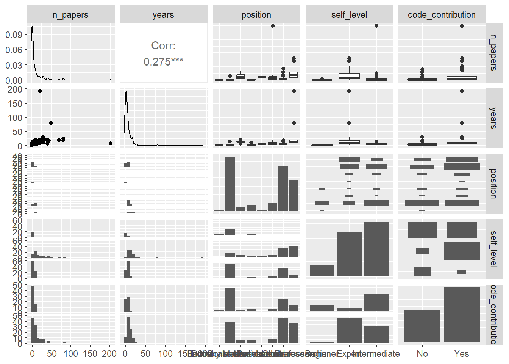

# upload to the git 1
library(readxl)
library(foreach)
library(stringr)
library(dplyr)
library(tokenizers)
library(data.table)
library(ggplot2)
library(plyr)
library(quanteda)
library(SemNetCleaner)
library(purrr)
library(tidytext)
library(tm)
library(topicmodels)
library(SnowballC)
library(Matrix)
library(text2vec)
library(tidyr)
library(janitor)
library(GGally)user_study
Setup
data <- read_excel("data/results-survey3.xlsx")
data <- data[1:121] %>%
filter(.[[18]] !='Yes') # not analysed any EEG methodUp or down
Experience ~ tools
vec <- names(data[25:49]) %>% str_split_i(., "\\[", 2) %>% str_sub(., 1, -2)
software <- data[25:49] %>%
rename_at(vars(colnames(.)), ~ vec) %>%
mutate_at(vars(vec), function(., na.rm = FALSE) (x = ifelse(.=="Yes", 1, 0))) %>%
cbind(data[20], .) %>% dplyr::rename(years = !!names(.)[1]) %>% filter(years < 50) %>%
select_if(colSums(.) != 0)Warning: Using an external vector in selections was deprecated in tidyselect 1.1.0.
ℹ Please use `all_of()` or `any_of()` instead.
# Was:
data %>% select(vec)
# Now:
data %>% select(all_of(vec))
See <https://tidyselect.r-lib.org/reference/faq-external-vector.html>.software %>%
select_if(colSums(.) > 10) %>% dplyr::select(years, EEGLAB) %>%
ggplot(., aes(x=as.factor(EEGLAB), y=years)) +
geom_boxplot()
software %>%
select_if(colSums(.) > 10) %>% dplyr::select(years, FieldTrip) %>%
ggplot(., aes(x=as.factor(FieldTrip), y=years)) +
geom_boxplot()
software %>%
select_if(colSums(.) > 10) %>% dplyr::select(years, "MNE-Python") %>%
ggplot(., aes(x=as.factor(`MNE-Python`), y=years)) +
geom_boxplot()
software %>%
select_if(colSums(.) > 10) %>% dplyr::select(years, Brainstorm) %>%
ggplot(., aes(x=as.factor(Brainstorm), y=years)) +
geom_boxplot()
a <- software %>%
select_if(colSums(.) > 10)
res <- a %>% dplyr::select(years, BESA) %>%
group_by(BESA) %>% dplyr::summarise(mean(years)) %>% dplyr::rename(., Usage = BESA,BESA = `mean(years)`)
cn <- colnames(a[3:length(a)])
for (i in 1:length(cn)){
tmp <- a %>% dplyr::select(years, cn[i]) %>%
group_by_at(2) %>% dplyr::summarise( mean(years)) %>% dplyr::select(-1)
colnames(tmp) <- cn[i]
res <- cbind(res, tmp)
print(cn[i])
}[1] "Brainstorm"
[1] "Brain Vision An.. "
[1] "EEGLAB"
[1] "ERPLAB"
[1] "FieldTrip"
[1] "LIMO"
[1] "MNE-Python"
[1] "SPM"res %>% t() %>%
row_to_names(row_number = 1) %>% data.frame() %>% dplyr::rename(., not_used = X0, used = X1) not_used used
BESA 7.684524 8.583333
Brainstorm 7.543624 8.709677
Brain Vision An.. 7.757143 7.700000
EEGLAB 6.271429 8.681818
ERPLAB 7.388889 9.166667
FieldTrip 7.526042 7.994048
LIMO 7.485030 11.076923
MNE-Python 8.215596 7.021127
SPM 7.651235 8.583333ny <- merge(data.frame(rowSums(software)), data[20]) %>%
rename_at(vars(colnames(.)), ~ c("n_soft", "years")) %>% filter(years < 50)
ny %>%
lm(data=., n_soft ~ years) %>% summary(.)
Call:
lm(formula = n_soft ~ years, data = .)
Residuals:
Min 1Q Median 3Q Max
-8.839 -4.339 -1.339 2.661 22.661
Coefficients:
Estimate Std. Error t value Pr(>|t|)
(Intercept) 1.034e+01 5.900e-02 175.2 <2e-16 ***
years 2.363e-16 6.119e-03 0.0 1
---
Signif. codes: 0 '***' 0.001 '**' 0.01 '*' 0.05 '.' 0.1 ' ' 1
Residual standard error: 6.326 on 32398 degrees of freedom
Multiple R-squared: 1.978e-26, Adjusted R-squared: -3.087e-05
F-statistic: 6.41e-22 on 1 and 32398 DF, p-value: 1ny %>% plot(.)
merge(data.frame(rowSums(software)), data[21]) %>%
rename_at(vars(colnames(.)), ~ c("n_soft", "selfass")) %>%
lm(data=., n_soft ~ selfass) %>% summary(.)
Call:
lm(formula = n_soft ~ selfass, data = .)
Residuals:
Min 1Q Median 3Q Max
-8.839 -4.339 -1.339 2.661 22.661
Coefficients:
Estimate Std. Error t value Pr(>|t|)
(Intercept) 1.034e+01 1.082e-01 95.58 <2e-16 ***
selfassExpert -1.194e-14 1.214e-01 0.00 1
selfassIntermediate -1.975e-14 1.190e-01 0.00 1
---
Signif. codes: 0 '***' 0.001 '**' 0.01 '*' 0.05 '.' 0.1 ' ' 1
Residual standard error: 6.326 on 32757 degrees of freedom
Multiple R-squared: 1.333e-27, Adjusted R-squared: -6.106e-05
F-statistic: 2.183e-23 on 2 and 32757 DF, p-value: 1In search of single variable representing experience
ggpairs(exp_data[1:2]) 
ggpairs(exp_data[4:5]) 
ggpairs(exp_data[3:5]) 
ggpairs(exp_data) `stat_bin()` using `bins = 30`. Pick better value with `binwidth`.
`stat_bin()` using `bins = 30`. Pick better value with `binwidth`.
`stat_bin()` using `bins = 30`. Pick better value with `binwidth`.
`stat_bin()` using `bins = 30`. Pick better value with `binwidth`.
`stat_bin()` using `bins = 30`. Pick better value with `binwidth`.
`stat_bin()` using `bins = 30`. Pick better value with `binwidth`.